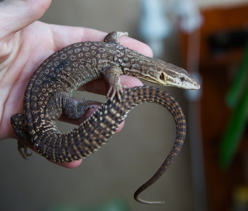
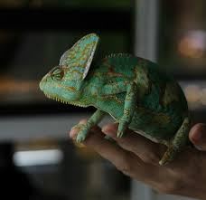
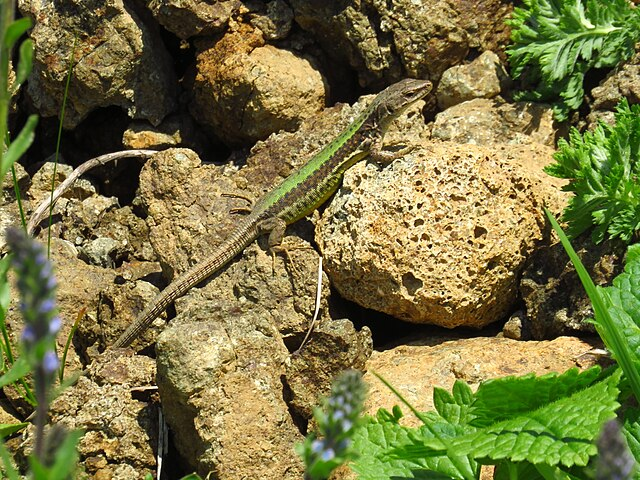
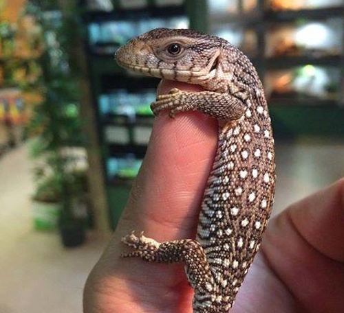
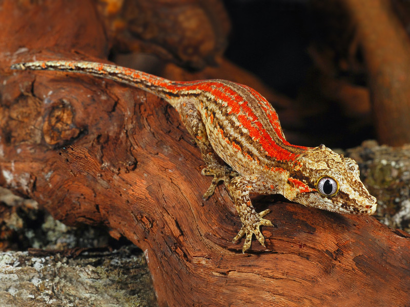
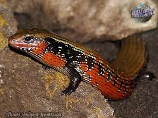

Не всі ці ящірки підходять для початківців. Вони, як правило, слухняні , не дуже агресивні , спокійні . З цими ящірками часто поводитися досить легко , без протидії опору, за умови, що приручення було зроблено належним чином. Вони часто цікаві плазуни і добре пристосовані до дітей . Менші, такі як ящірка з кільчастим горлом, дуже енергійні і стрибають, особливо для розваги.
Ящірка ідеально підходить для любителів тераріуму. Деякі види створені лише для початківців: австралійський бородатий дракон, леопардовий геккон, уромастикс, комірчаста ящірка, синьоязичний сцинк. Всі вони мають свої особливості. Деякі з них вищі за інші, наприклад, Уромастикс, який у зрілому віці може вирости до 70 см. Ящірка, як правило, насторожена і активна. Народившись у неволі (найчастіше), ця рептилія буде особливо слухняною.
Його приручення буде здійснено без труднощів. Домашня ящірка досить добре переносить ласки та поводження. За умови дотримання кроків у підході. Тривалість життя ящірки варіюється залежно від її виду. У той час як австралійський бородатий дракон і нашийник-ящірка можуть жити близько 8 років (до 10 років у рідкісних випадках), леопардовий геккон може досягти 20-річної позначки, тоді як синьоязичний сцинк може підійти до 30.
Кожна Ящірка має свої фізичні особливості. Australian Blue Dragon є досить потужним , середнім розміром, і має великі клешні. Шипохвости є одним з найменших ящірок в своєму роді, вимірюючи максимум лише близько сорока сантиметрів. Він має кремезне тіло і своєю назвою зобов’язаний досить загостреному хвосту. Ще менше, ми знаходимо леопардового геккона , який рідко перевищує 25 см . У нього є сукня, що нагадує леопардову (жовта з чорними плямами), звідси і саме ця назва.
Collared Lizard особливо живий і бачить його розмір трохи більше , ніж Leopard Gecko (близько тридцяти сантиметрів). Якщо вона схожа на ігуану, це не так, оскільки вона належить до сімейства Crotaphytidae. Самий великий з усіх тут є велетенські ящірки , яка може вирости до 70 см в довжину . Його тіло весь час вкрите лусочками, і він має особливість мати… блакитний язик, звідси і його назва.
Тіло: масивне середнього розміру у австралійського бородатого дракона, досить кремезне з хвостом, де в Уромастиксі є кілька шипів. Леопардовий геккон дуже витягнутий, без реального розмежування між головою та самим тілом. Ящірка-комірець схожа на маленьку ігуану, не належачи до цієї родини. Його основна характеристика - наявність чорного коміра на шиї. Синьоязичний Скінк досить міцний, з досить довгим тілом, покритим великими лусочками.
Колір: жовтий, досить блідий для австралійського бородатого дракона, Uromastyx має світло-бежевий до оранжевий колір шкіри і має деякі плями. Леопардовий геккон часто бежевий або жовтий з чорними цяточками. Основна сукня «Ящірки-комірця» - блакитно-блакитна, яка дрейфує до зеленого. Колір варіюється від бежевого до коричневого із зеленими плямами у Синьоязичного Сцинка.
Його голова: австралійський бородатий дракон має велику трикутну голову, як і Уромастикс, з чорним зверху і більше помаранчевим по боках і знизу. Голова Ящірки-нашийника позначає решту його тіла, оскільки воно переважно жовте.
Його очі: круглі, жовті та чорні для австралійського бородатого дракона. Очі Уромастиксу більш витягнуті, майже овальні, оранжеві та чорні. Рухомі повіки з вертикальною зіницею у леопардового геккона.
Хвіст: загострений і колючий в Уромастиксі, більш покритий у Леопардового Геккона. Хвіст Ящірки-комірця прямий без найменшого жала.
Ящірка повинна мати можливість жити в просторі, пристосованому до її морфології та способу життя. Крім того, ящірка, як і всі плазуни, потребує дуже особливого клімату. Його тераріум повинен реагувати на свій біотоп . Єдина модифікація температури та гігрометрії може бути фатальною для цієї рептилії, яка живе більшу частину часу в пустелях, напівпустелях та тропічних регіонах.
Тераріум повинен бути боково відкритим для практичності. Однак слід подбати про те, щоб Ящірка не скористалася можливістю втекти. Її розмір повинен бути достатньо великим, щоб ящірка могла насолоджуватися 2 дуже чіткими температурними зонами : одна гаряча і одна холодна. Його поверхня, як правило, повинна відповідати розміру ящірки в 3 рази . Потім останні можуть еволюціонувати на різних ґрунтах: траві, піску або деревній трісці.
Що стосується температури тераріуму , її потрібно підтримувати, використовуючи, наприклад, нагрівальні мати або керамічні лампи. Термостат регулює все. Вологості для Лайзард часто варіюються між 50 і 80% . Існують також способи сприяти його зовнішньому вигляду через миску з водою, де рептилія просочиться сама, і поливаючи рослини. Загальніше, Ящірці знадобиться миска з водою, а також гілки, на які можна піднятися і погрітися.
Ящірка може жити від 7 до 30 років залежно від виду. Дуже повільний обмін речовин часто не дозволяє Ящірці швидко захворіти. Його фаза інкубації проходить особливо повільно. Більшість захворювань, на які він заразився за життя (якщо зловив), пов’язані з неправильним харчуванням, поганими умовами у неволі, недостатнім рівнем вологості або нестачею вітамінів. Ящірка може постраждати від опіків, якщо вона безпосередньо контактує з джерелом тепла свого тераріуму. Він також може стати жертвою стирання трибуни обличчя , вдарившись об стіни своєї вітальні.
У випадку, якщо ящірці дають живу здобич, вона може її травмувати, спричиняючи рани, які, якщо їх погано обробити або не дуже помітні, можуть швидко призвести до смертельного сепсису . Можливо, періоди линяння не проходять добре. У цьому випадку у ящірки можуть розвинутися досить серйозні бактеріальні інфекції. Існує також харчовий остеофіброз, який є наслідком нестачі кальцію і робить усі кістки ящірки крихкими. Нарешті, як у всіх тварин, у нього може бути діарея .
Харчування ящірки залежить від її належності до різних груп: рослиноїдні, всеїдні та хижі. Всі вони не розміщені в одному човні . Велетенські ящірки є всеїдним , наприклад , що харчуються рослинами (60% від раціону), м'ясні продукти (40%) і комах , а також. Те саме стосується ненажерливих нашийників . Вони можуть ковтати цвіркунів, борошнистих черв’яків та плоди мишей.
З загальної точки зору, рослиноїдним тваринам потрібно 30% білків, 5% жирів і 65% вуглеводів, п'ята частина яких - клітковина. У м'ясоїдні мають свої потреби в їжі поширюється на 50% білка і 45% жиру. Нарешті, всеїдні тварини потребують білка та ліпідів близько 25%. Другу половину складають
Гігієна особливо важлива для плазунів. Відсутність гігієни та догляду часто викликає патології. Тому важливо регулярно чистити тераріум , щоб запобігти накопиченню фекалій. Це сприяє появі паразитів, які можуть перешкоджати періодам линьки, зокрема ящірки. Міску для води також слід міняти майже щотижня .
Кільцехвостий варан (гребнехвостий або колючий варан)

Кільцехвостий варан — маленька копія комодського, з характерними шипами на хвості. Це хижаки, які живляться в основному комахами, а іноді — дрібними гризунами. Це найзручніші варани для домашнього утримання.
Ящірки досить великі — від 60 до 75 см в довжину.
живе 15-20 років;
товариська, слухняна;
потрібен великий вольєр з хорошим замком, гарячий басейн для купання, спеціальний субстрат для копання.
Хамелеон

Хамелеон — одна з найвідоміших ящірок в світі. Він вміє змінювати забарвлення, рухається повільно, періодично завмираючи на місці, а здобичк ловить довгим «вистрілювальним» язиком. Ще одна відмінна риса хамелеона — незвичайні телескопічні очі.
Купуючи хамелеона, потрібно пам'ятати — ця ящірка не дуже добре адаптується до життя в неволі і вимагає особливого догляду. Хамелеони неагресивні та дуже сором'язливі, а будь-яке близьке спілкування — стрес для них. Розмір ящірки залежить від конкретного виду і лежить в межах від 2,5 до 70 см.
живе 2 роки;
не любить спілкування, спокійна;
потрібен великий вольєр, підвищена температура та вологість.
Довгохвоста ящірка (азійська трав'яна ящірка)

Хвіст азійської трав'яної ящірки в три рази довший за її тіло. Незважаючи на це, сама ящірка досить маленька та легка — її довжина від носа до клоаки не більше 20 см. Такому вихованцеві знадобиться тераріум не менше 90 л, щоб він міг лазити й бігати — трав'яні ящірки дуже енергійні. У вольєрі повинно бути багато листя та гілок для імітації природного місця існування.
Довгохвості ящірки добре приручаються, вони ніжні й делікатні, а їхній «будиночок» виглядає дуже мальовничо.
живе 5-6 років;
товариська;
потрібен великий вольєр з великою кількістю гілок і листя.
Степовий варан

Цей варан — одна з найкращих великих ящірок для новачків. Він виростає до 90 см в довжину — серед варанів це досить скромні розміри. Сильна та розумна ящірка любить досліджувати територію, тому обов'язково спробує втекти з вольєра — їй потрібен просторий тераріум, що добре закривається.
Степові варани люблять копати, їдять мишей, комах і безхребетних. Вони добре приручаються при регулярному й делікатному спілкуванні, відрізняються доброзичливим характером.
живе 15-20 років;
товариська, слухняна;
потрібен великий вольєр з хорошим замком, спеціальний субстрат для копання.
Вухатий Новокаледонський гекон (гекон-горгулья)

Вухаті гекони нагадують популярних геконів-бананоїдів, але у них немає характерних «війок». У них ті ж вимоги до утримання (додатковий обігрів і освітлення, невелика купалка), але більш сором'язливий характер.
Ці ящірки хороші, якщо хочеться просто спостерігати за красивим вихованцем, але не брати його в руки. Вони виростають максимум до 20 см.
живе 10-15 років;
не любить спілкування;
утримується в звичайних умовах.
Вогняний сцинк

Яскравий вогняний сцинк — ящірка родом з Африки. Вона виростає лише до 40 см в довжину й не вимагає складних умов утримання — потрібні тільки грунт для копання та дієта з комах і (зрідка) мишок.
Зазвичай ці ящірки досить сором'язливі, але спостерігати за ними дуже цікаво. Ще одна перевага вогненних сцинків — вони майже ніколи не хворіють.
живе 15-20 років;
активна, нетовариська;
потрібен спеціальний субстрат для копання.